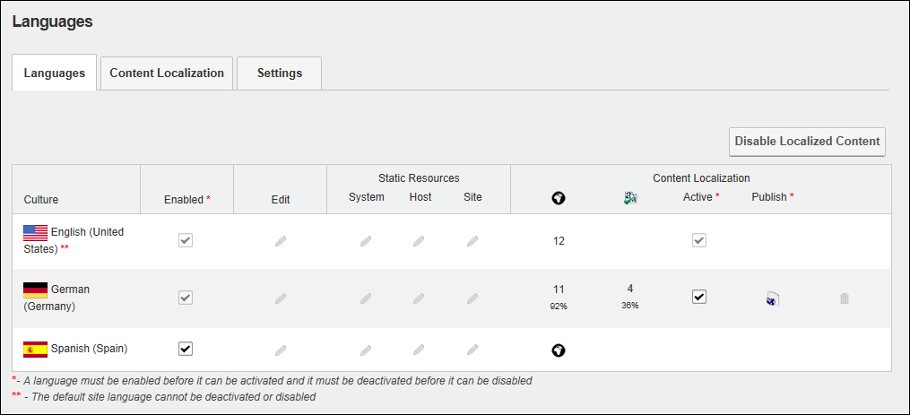

The Language Management page allows users to manage multi-language site and language translations. Five languages (German, French, Spanish, Italian and Dutch) are provided with the default installation of DNN. It allows authorized users to perform the following:
The Languages module is pre-installed on the Admin > Advanced Settings >  Languages page and can be added to site pages.
Languages page and can be added to site pages.
Tip: A large section of language packs are available from the DotNetNuke Store (http://store.dnnsoftware.com/).

The Languages Module